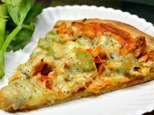
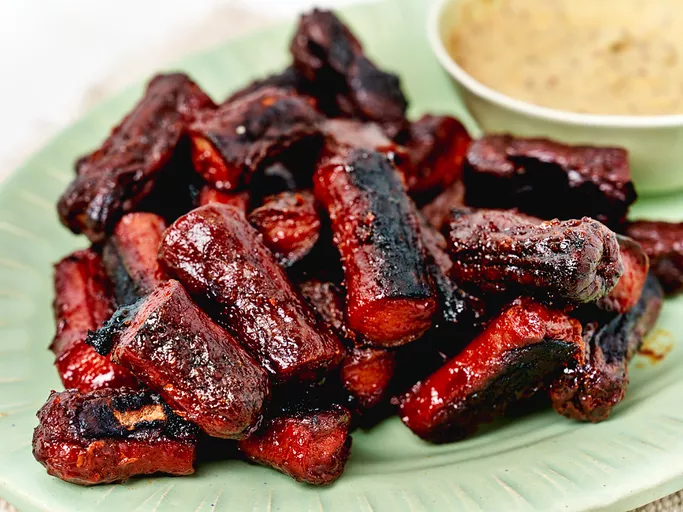
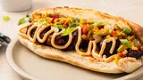

Recipies Odin
TouchDown Pizza

My favorite sports pub serves this,
and I've come up with a simple and delicious home version.
Many local restaurants sell wing sauce, and most grocery stores
carry it near the steak and BBQ sauces. It's rich, so serve in
squares as an appetizer. Serve ranch dressing, celery, and carrot sticks on the side.
Enjoy!
Ingredients
- 1 (14 ounce) package prebaked pizza crust (such as Boboli®)
- 1 cup diced cooked chicken breast
- 3 tablespoons Buffalo wing sauce
- ½ cup Buffalo wing sauce
- 1 (4 ounce) package crumbled blue cheese
- 1 stalk celery, thinly sliced
- 1 cup shredded mozzarella cheese
Steps
- Preheat oven to 475 degrees F (245 degrees C).
Line a baking sheet with aluminum foil.
- Place pizza crust on the
prepared baking sheet.
- Mix chicken and 3 tablespoons wing sauce together
in a bowl until evenly coated.
- Spread 1/2 cup wing sauce on the pizza crust; top with blue cheese,
chicken mixture, and celery.
Cover pizza with mozzarella cheese.
- Bake in the preheated oven until pizza is cooked
through and cheese is bubbling, about 12 minutes.
Cool pizza about 5 minutes before cutting into squares.
Hot Dog Burnt Ends

These charred hot dog burnt ends are crispy, juicy,
and simply delicious. Serve with mustard for dipping.
Ingredients
- 2 packages beef hot dogs
- 1 cup yellow mustard
- 2 tablespoons brown sugar
- 1 teaspoon cayenne pepper
- 1 teaspoon onion powder
- 1/4 teaspoon freshly ground black pepper
- 1 cup BBQ sauce
Steps
-
Preheat the oven to 350 degrees F (175 degrees C).
Line a baking sheet with aluminum foil.
-
Combine hot dogs, mustard, brown sugar, cayenne pepper, onion powder,
and black pepper in a large resealable bag.
Shake bag so hot dogs are well coated with mustard and spice mixture.
Spread out seasoned hot dogs onto the prepared baking sheet.
-
Bake in the preheated oven for 1 hour.
- Remove hot dogs and cut them into thirds.
Increase oven temperature to 400 degrees F (200 degrees C).
- Combine hot dog pieces and BBQ sauce in a bowl and mix until
hot dogs are completely coated with sauce.
Return to the baking sheet.
- Bake in the preheated oven for an additional 10 minutes.
Kansas City Style "Burnt Ends" Philly Cheesesteak

A twist on a Philly Cheesesteak featuring Kansas City style
"burnt ends" barbecue and traditional
cheesesteak toppings like sauteed onions, pickled peppers,
and cheese whiz.
Ingredients
- 3 ½ pounds beef chuck roast (should be very well-marbled)
- 3 tablespoons barbecue dry rub
- ½ cup Kansas City style BBQ sauce
- 4 sandwich or hoagie rolls
- 1 (8 ounce) container cheese whiz, or sliced cheese as needed
- ⅔ cup sautéed onions
- ⅔ cup chopped jarred pickled peppers
- 2 tablespoons sliced green onions
Steps
-
Gather all ingredients, and preheat the oven to 325 degrees F (165 degrees C).
Season beef with dry rub, and double wrap in foil. Place on a sheet pan or in a baking dish,
seam side up, and roast in the preheated oven for 2 1/2 hours.
-
Let rest for 1 hour. Unwrap and transfer to a cutting board. Reserve all juices.
Cut into 1-inch cubes and transfer to a mixing bowl.
Add cooking juices, more dry rubif desired,
and bbq sauce. Mix well, wrap, and refrigerate overnight.
-
Preheat the oven to 450 degrees F (230 degrees C).
Transfer beef into a shallow baking dish and brush
generously with bbq sauce.
- Roast in the preheated oven until meat starts to char around the edges,
about 1 hour. Remove from oven and brush again with bbq sauce.
Reduce oven temperature to 250 degrees F (120 degrees C).
- Roast until the "burnt ends" are as tender as you want, about 1 1/2 hours more.
- Transfer the "burnt ends" onto the rolls,
and finish with cheese whiz, onions, peppers, and green onions.